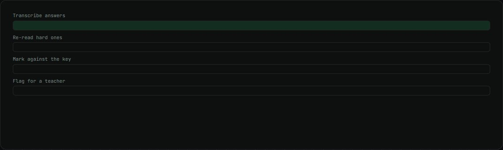
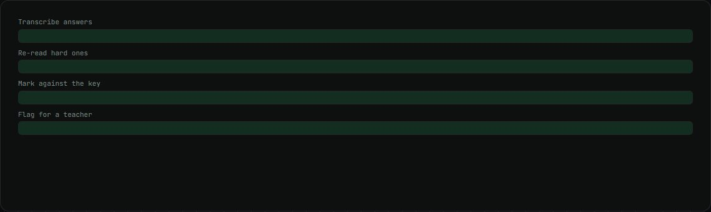

Noon exam grader demo
One student's scanned exam, transcribed and marked against the answer key, with doubts flagged.
my role Built the demo.
The problem
Marking long handwritten exam papers by hand is slow, and it is hard to check where each mark came from.
How it works
- Every answer is transcribed exactly as written.
- A second model re-reads the answers that need it.
- A separate step marks each answer against the answer key and rubric.
- Judgement calls, illegible and disputed answers are flagged for a teacher.
What changed
- 47questions across 4 subjects
- 9questions flagged for a teacher
What I built
- The review page that shows each answer, its mark and the reason.
Stack
- LLM transcription
- Rubric marking
- GitHub Pages
Real screen recording
Stills

